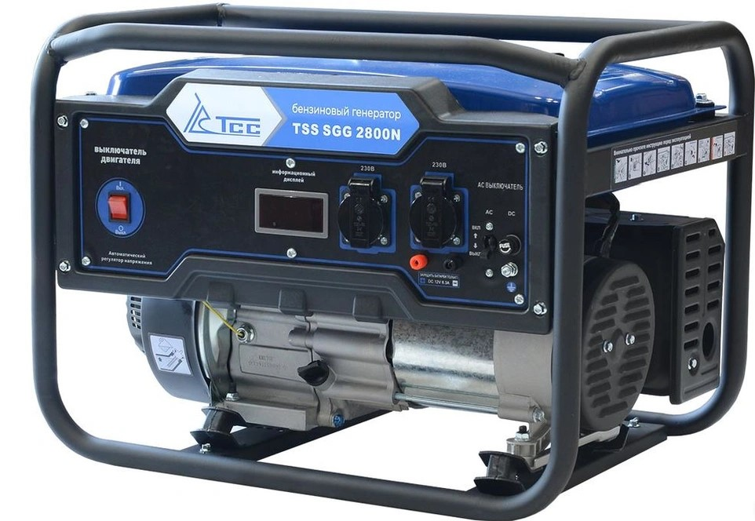
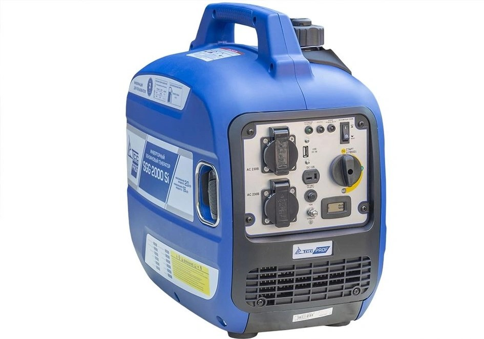
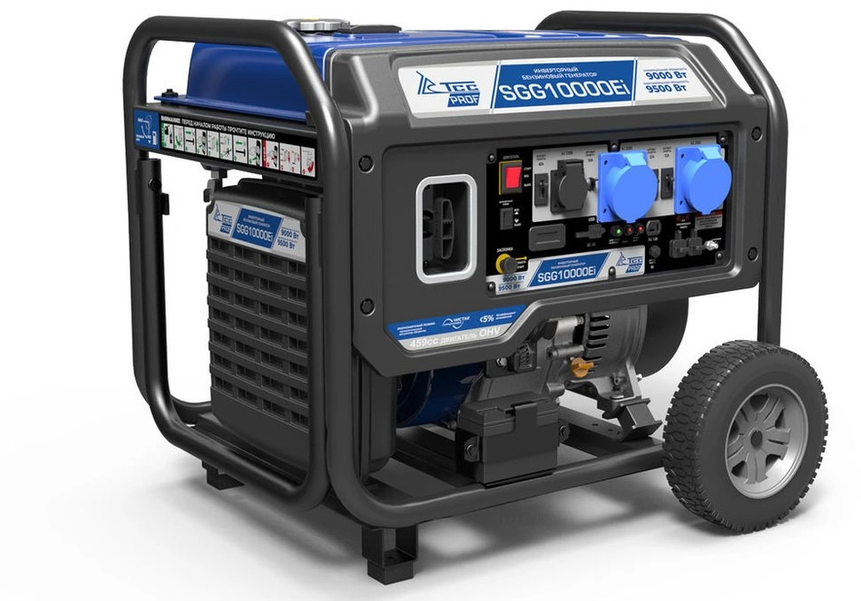

GSTS Power
Стабильная энергия для любых задач
Широкий диапазон применения дизель-генераторов
Вы решили купить дизельный генератор? Где и как Вы будете его использовать?
Дизель-генератор — устройство, состоящее из конструктивно объединённых дизельного двигателя и генератора. В зависимости от сферы применения выделяют следующие виды дизель-генераторов:- Портативные – оптимально подходят для снабжения электроэнергией загородного жилья либо участка небольшой мощности. Обычно для портативных дизель-генераторов характерны различные уровни защиты от шума, модели отличаются числом фаз и вариантами комплектации. Данное оборудование способно обеспечить непрерывную работу бытовых приборов в течение длительного периода времени.
- Промышленные – дизель-генераторы используются для электроснабжения производств различной мощности, строительных участков и даже целых жилых районов.
- Передвижные дизельные генераторы. Такая их особенность позволит существенно сэкономить время и денежные средства при переезде с одного строительного объекта на другой.
Дизель-генераторы, в зависимости от особенностей эксплуатации, могут поставляться открытыми на раме (для установки в помещении или под навесом), или во всепогодном кожухе для защиты от атмосферных осадков (для эксплуатации на улице).
Наши предложения
Бензиновые генераторы

Описание
{kind=link}
{kind=link}
{kind=link}
Бензиновые генераторы ТСС совершенно незаменимы для множества ситуаций, где требуется недорогой, мобильный, неприхотливый и простой в эксплуатации источник независимого электроснабжения. Они отлично справятся с созданием резервного электропитания в случаях отключения электроэнергии, но и гарантирует стабильную работу в качестве главного источника питания. Бензогенератор может применяться на даче, в гараже, для уличной торговли или летнего кафе, а также, при выездах в автопутешествия с палатками или на рыбалку.
Характеристика
- Эксплуатация - новый
- Выходное напряжение - 220x380 В
- Мощность - 17 кВт
- Тип исполнения - в кожухе
- Производитель - ГК ТСС
Мотопомпы
{kind=link}
Описание
Используются как для откачки воды из канав на дачных участках, так и для ликвидации последствий крупных промышленных аварий. В период весеннего половодья быстро откачает воду из подвальных помещений или погребов.
Инвенторные генераторы
 {kind=link}
{kind=link}
{kind=link}
{kind=link}
Описание
Инверторные бензиновые генераторы ТСС обеспечивают выработку электрического тока для качественного и стабильного питания подключенной техники, и оборудования. Компактные размеры позволяют использовать инверторные бензиновые электростанции во многих бытовы.
Характеристика
- Выходное напряжение - 220 В
- Мощность - 0.8 кВт
- Эксплуатация - новый
- Производитель - ГК ТСС
Дизельные генераторы
{kind=link}
Описание
Дизель генератор с максимальной мощностью 5.5 кВт не только отлично справится с созданием резервного электропитания в случаях отключения электроэнергии, но и гарантирует стабильную работу в качестве главного источника питания.
Характеристика
- Выходное напряжение - 230 В
- Мощность - 5.5 кВт
- Эксплуатация - новый
- Тип исполнения - открытый
- Серия - SDG
- Запуск - электростартер
- Производитель - ГК ТСС
Сварочные электростанции
{kind=link}
Описание
Сварочный бензиновый генератор предназначен для проведения высококачественной Ручной Дуговой Сварки. Имеет дополнительную функцию - питание электропотребителей.
Характеристика
- Мощность - 1.3 кВт
- Эксплуатация - новый
- Производитель - ГК ТСС
Автоматический ввод резерва для генераторов (АВР)
{kind=link}
Описание
- Предназначен для бензогенераторов мощностью от 6 до 9 кВт, напряжением 400В.
- При возникновении аварийной ситуации производит автоматический запуск электростанции, восстанавливая электроснабжение.
- Рабочий диапазон температур от +5°C до +40°C.
- В режиме ожидания станция осуществляет постоянную подзарядку бортового аккумулятора от сети.
- Комплектуется кабелем 5 м для подключения к электростанции.
О компании GSTS POWER Минск
Портативные дизельные генераторы – идеальное решение в области обеспечения электроэнергией дачных домов, строительных площадок, автосервисов, магазинов, складов и многих других объектов. Переносной дизель-генератор небольшой мощности легко помещается в багажнике автомобиля и может быстро перевозиться туда, где необходим источник электроэнергии. Мини электростанции, представленные в нашем онлайн-каталоге, производятся в различных вариантах, включая версии с электростартером и колёсами для комфортного перемещения. Модели дизельных генераторов, запускаемые поворотом ключа, могут дооборудоваться автозапуском для использования в качестве резервного источника питания.
Наши преимущества:
- выгодные цены
- быстрые сроки поставки
- высокое качество.
GSTS POWER предлагает товары следующих поставщиков, марок и производителей:
ГК ТСС, Россия, Fogo,Польша и другие.
Общие сведения
- Компания GSTS POWER - Дилер
- Компания GSTS POWER основана в 2020 году.
Сведения из Торгового реестра
- ИП Подлесская Анна Алексеевна
- УНП 192840317
- Регистрация в Торговом реестре №46690 от 07.12.2020
- Государственная регистрация от 07.12.2020, Минский горисполком
- Юридический адрес: г. Минск, ул. Фабрициуса
- Номер плательщика в ЕРИП: 9613826586
- Образец товарного чека: товарный чек.
{kind=link}
Контакты
 +375 (44) 759-29-70
gsts.power@gmail.com
+375 (44) 759-29-70
gsts.power@gmail.com
+375 (44) 759-29-70Товары и услуги:
- Бензиновые генераторы
- Мотопомпы
- Инвенторные генераторы
- Дизельные генераторы
- Сварочные электростанции
- Автоматический ввод
резерва для генераторов (АВР)
+375 (44) 759-29-70